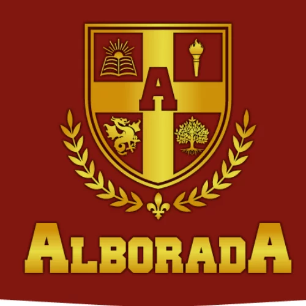

El colegio Alborada es un Establecimiento perteneciente a la Corporación Educacional América Latina, cuya presidenta es la señora María Eugenia Cordero Velásquez, fue fundado el 08 de Agosto de 1989.
Alborada
Nuestra institución educativa es un lugar donde maestros y alumnos enseñan y aprenden en un ambiente dinámico e intelectual. Tenemos una amplia oferta curricular de apoyo y clases individuales, así como asesoramiento independiente, que responden a las necesidades particulares de cada uno de nuestros estudiantes, en las diferentes ramas del aprendizaje.
UELAC
El UNIDAD EDUCATIVA JULIO MARIA MATOVELLE se encuentra ubicado en la provincia de Azuay, en el cantón Cuenca de la parroquia Bellavista. Es un centro educativo de Ecuador perteneciente a la Zona 6 geográficamente es un centro educativo urbano, su modalidad es Presencial en jornada Matutina y Vespertina
Julio Matovelle